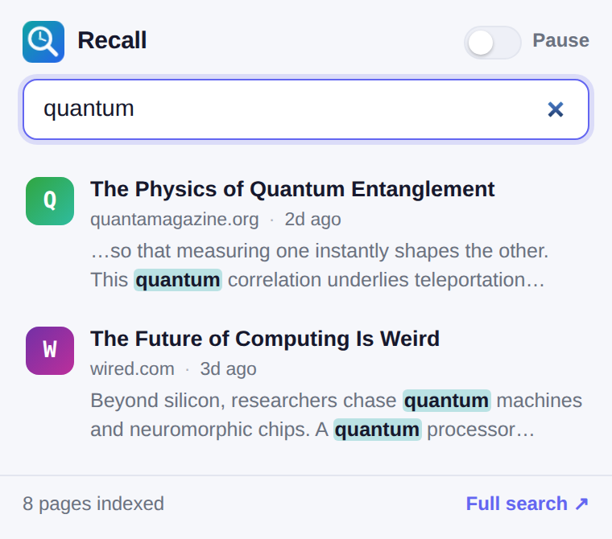
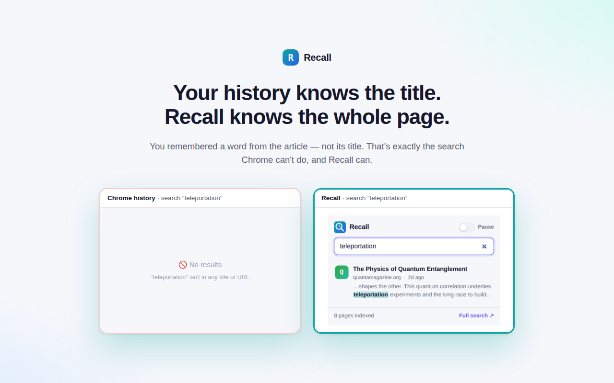

Chrome's history only matches titles and URLs. Recall indexes the text of every page you read, so you can search your browsing by any word that was on the page — and it all stays on your device.
Free forever for the last 14 days of reading · Pro is $15 once — no subscription, ever

You remembered a phrase from the article, not its headline. That's the search the built-in history can't do — and the whole reason Recall exists.
Search the actual body text of pages you've read — titles, descriptions and paragraphs — not just their URLs.
Every readable page you open is quietly added to a local index. No saving, no bookmarks, no setup.
Get the best matches first, each with a snippet where your terms are highlighted. Click to reopen.
No servers, no account, no analytics — literally zero network calls. Your reading stays yours.
Logins, banking and checkout pages are never indexed. Pause anytime or ignore any site.
Browse what's indexed, filter by site & date (Pro), export to JSON (Pro), or clear it all in one click.

Recall's index is built and searched entirely inside your browser. There is no backend to send anything to — and we made that literally testable.
The extension makes no requests to any server. Its automated test suite fails if a single non-local request is made.
Nothing to sign up for. The only optional network touch is the one-time Pro payment, handled by Stripe via ExtensionPay.
Pause indexing, keep a per-site ignore list, and wipe the whole index whenever you like.
The free tier covers most people. Pro is an impulse price, once.
No. Recall builds and searches its index entirely on your device using Chrome's local storage. It makes no network requests at all — the only exception is the optional one-time Pro purchase, processed by Stripe via ExtensionPay.
Chrome history only matches the title and URL of pages you visited. Recall reads the readable text of each page and indexes it, so you can search by any word that appeared in the body — "that article about teleportation" — even when it's nowhere in the title.
Normal http(s) pages you actually read. It automatically skips pages that look sensitive (logins, banking, checkout), and you can pause indexing or add any site to an ignore list. It never touches page content for anything other than your local index.
No. Indexing happens after a page settles and only stores a compact set of tokens plus a short excerpt. The free tier keeps the last 14 days (up to 2,000 pages) and drops the oldest automatically; Pro keeps everything.
Yes. $15 once, all Pro features forever, every future update included. Payments are processed by Stripe via ExtensionPay; we never see your card details.